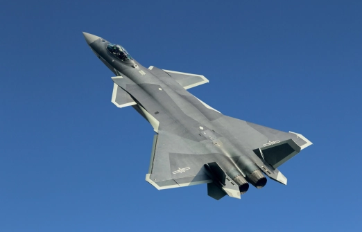
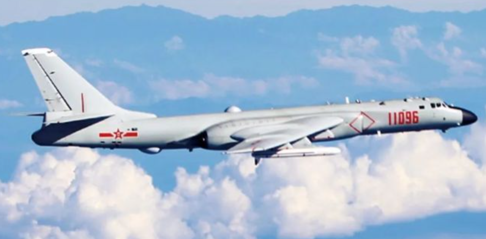
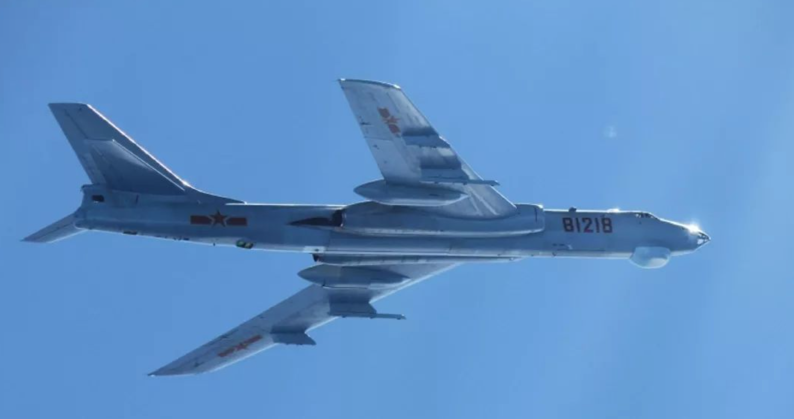
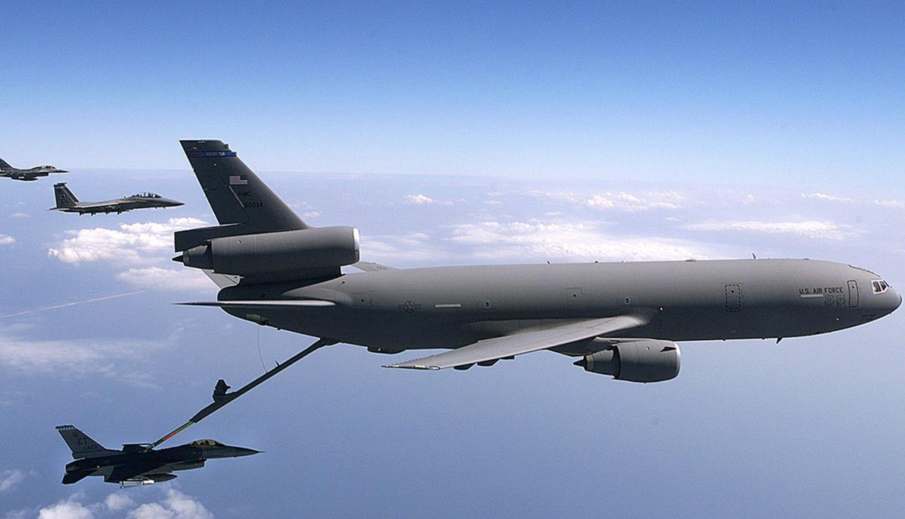

中国人民解放军空军
中国人民解放军空军（People's Liberation Army Air Force）是中国人民解放军的空中作战力量。作为中国军队的重要组成部分，中国空军在保卫国家安全和维护国家主权方面发挥着重要作用。
中国空军的历史可以追溯到1949年建军之初。经过几十年的发展，中国空军从最初的小规模部队逐渐成长为一支现代化、多样化的军种。在过去的几十年里，中国空军经历了技术的进步和现代化的转型，提高了作战能力和战斗力。
中国空军装备了各种先进的飞机和导弹系统，其中最为知名的是歼-20隐形战斗机。歼-20是中国自主研发的第五代战斗机，具备隐形特性和超音速巡航能力，为中国空军提供了空中优势和远程打击能力。此外，中国空军还拥有其他型号的战斗机，如歼-16、歼-10等，以及轰炸机、侦察机、无人机等各类飞机，形成了一个多样化的作战力量。
中国空军的任务范围广泛，包括空中巡逻、防空警戒、空中打击、侦察侦察等。它承担着保卫国家领土、维护国家海上权益、反恐维稳和应对突发事件等重要任务。中国空军还积极参与国际合作和维和行动，为世界和平和地区稳定做出了贡献。
军种概况
中国人民解放军空军是以航空兵为主体的军种。进行空中作战、对空作战和从空中对地面目标实施攻击的主要军事力量。由航空兵、地空导弹兵、高射炮兵、空降兵、雷达兵、电子对抗兵、通信兵等兵种和其他专业勤务部队组成。下辖军区空军和军（空降兵）、院校、科研试验等单位。建立有基本适应现代战争需要的作战指挥、教育训练、科研装备和后勤保障体系，具有较强的空中进攻作战、防空作战和空运空降力量，担负着维护国家主权、保卫祖国领空安全的重大使命。还负有抢险救灾，参加国家社会主义建设的任务
空军是战略性军种，战略能力要与不断拓展的国家利益和不断变化的安全形势相适应。空军在改革强军中深化体系重塑，领导指挥体制、规模结构和力量编成焕然一新；歼-20、运-20、歼-16、歼-10C和轰-6K、空警-500，以及红旗-9防空导弹等新型武器装备投入新时代练兵备战，加快推进空天战略打击、战略预警、空天防御和战略投送等能力建设；中国空军不断拓展国际话语新空间，全力打造制胜空天的体系作战群和主导话语的舆论攻防群，实现硬实力和软实力协调发展
主要武器
-

战斗机
-

轰炸机
-

侦察机
-

空中加油机
-

地对空导弹系统